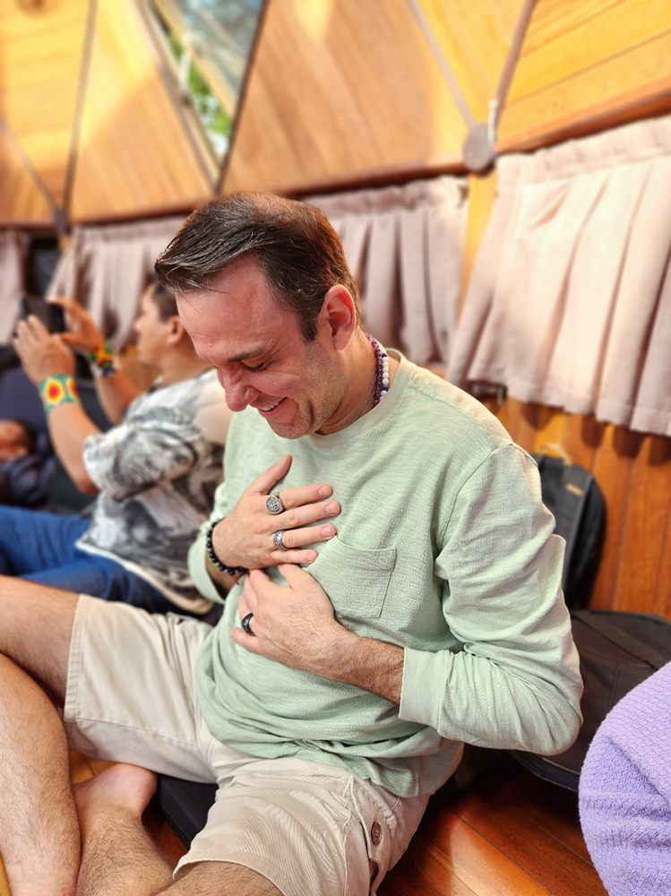
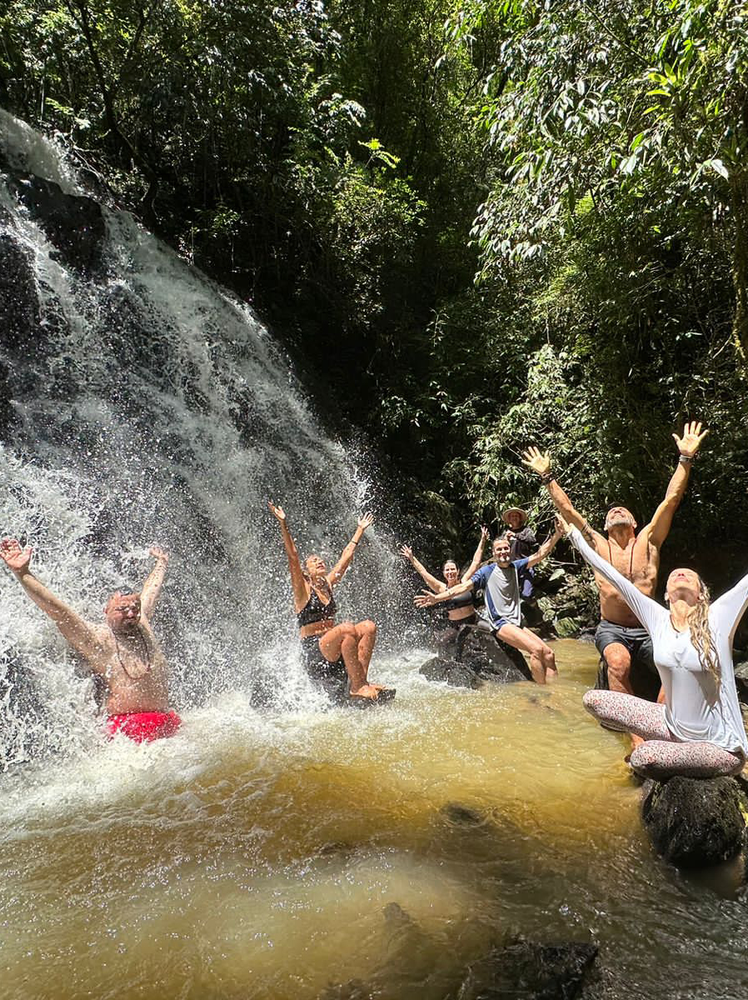

“Diga-me com quem andas que eu te direi pra onde vais! Se você sente o chamado em sua alma para o despertar. A alegria genuína, aceitação, não sofrimento, leveza, eu recomendo fortemente a experiência conduzida com Maestria por Michel Moreno, ele foi um divisor de águas na minha vida!”
- Rodrigo CardosoRetiro
Você se sente desconectado, cansado ou estressado? Preso a uma rotina, se sentindo sobrecarregado ou sem tempo? Em busca de mais sentido, propósito ou simplesmente de um tempo para parar, relaxar e se restaurar?
Então nosso retiro é para você!
Renove sua Mente, Corpo e Alma.
Embarque em uma imersão de 04 dias dedicada à reconexão, transformação e expansão.
Mergulhe conosco em uma jornada transformadora de autoconhecimento, relaxamento e paz interior.
Nosso retiro é mais que um evento, uma linda oportunidade de compartilhar, de novas experiências, um espaço acolhedor de cura e transformação, onde você pode desconstruir padrões antigos e descobrir novas possibilidades de ser e estar, em simbiose com a força da natureza e todos seus elementos sagrados!
Um tempo de pausa, um refúgio para renovar suas energias e expandir sua consciência!
Venha viver uma EXPERIÊNCIA única.
Fruto de uma combinação singular de práticas e dinâmicas, que trabalham de forma profunda, promovendo um reencontro - consigo mesmo e com a natureza, além de um estado de bem-estar e felicidade!
Veja algumas de nossas Práticas e Atividades:
Respiração
Meditação

Yoga
Dinâmicas de Autoconhecimento

Rodas de Cura

Relaxamento

Medicina do Cacau
Alimentação Natural e Medicinal
Silêncio

Lual com Fogueira

Cachoeira

Canoa Havaiana
Contemplação ao Por do Sol
Para QUEM é nosso Retiro?
Nosso retiro é perfeito para todos que:
- Buscam Relaxar e Alcançar Paz Interior:
Desconecte-se do caos e da rotina, e encontre um espaço de silêncio e serenidade;
- Desejam Autoconhecimento:
Obtenha ferramentas para controle do estresse, ansiedade e medo;
- Procuram Reencontro com a Natureza:
Restaure sua essência e propósito em conexão com a natureza;
- Querem Libertar-se de Padrões Negativos:
restaure velhos condicionamentos, eleve sua vibração e deixe para trás a negatividade, depressão e sofrimento;
- Buscam uma Comunidade Afim:
Conecte-se com pessoas que compartilham da mesma vibração e intenção.
O QUE NOSSO RETIRO OFERECE:
- Hospedagem Completa:
Conforto, silêncio e tranquilidade em meio à natureza;
- Refeições Detox Naturais:
Alimentação saudável e equilibrada;
- Todas as refeições inclusas:
desjejum, café, almoço, lanche, jantar e chá da noite;
- Cerimônia do Cacau:
Uma experiência espiritual e sensorial;
- Yoga todos os dias:
Práticas ao nascer do sol, para harmonizar corpo e mente;
- Técnicas de Respiração, Meditação e Relaxamento:
Ferramentas para controle emocional;
- Banhos de Cachoeira diário:
Renovação energética;
- Luau na Praia com Fogueira:
Momentos mágicos sob as estrelas;
- Passeio de Canoa Havaiana:
Conexão com a natureza, a vida em movimento;
- Trilhas e Passeios:
Exploração em reconexão com a natureza;
 Além de dinâmicas, práticas e muito autoconhecimento, em um ambiente seguro e familiar.
Além de dinâmicas, práticas e muito autoconhecimento, em um ambiente seguro e familiar.
Facilitadores


O que nossos participantes dizem:


“Obrigado por me conduzir nessa jornada de silêncio, bem aventurança e profunda paz interior! Gratidão mestre e amigo“
- Lincon Nunes“O Retiro de Volta para Casa, é sensacional, não tenho palavras para descrever a transformação através do amor que vivenciei com os irmãos cósmicos Carla e Michel”
- Alexandre
“O Retiro de Volta para Casa Foi uma das experiências mais transformadoras da minha vida ate hoje, só Gratidão e que venham os próximos porque estarei lá com certeza“
- Tay“ O retiro de Volta pra Casa , foi a experiência mais incrível que eu pude viver do meu autoconhecimento “
- Austre
Reserve Seu Lugar Agora e embarque nesta jornada única! Vagas limitadas.
Reservas e mais Informações:
whatsapp: + 5513974215015Nos vemos em casa! Namastê